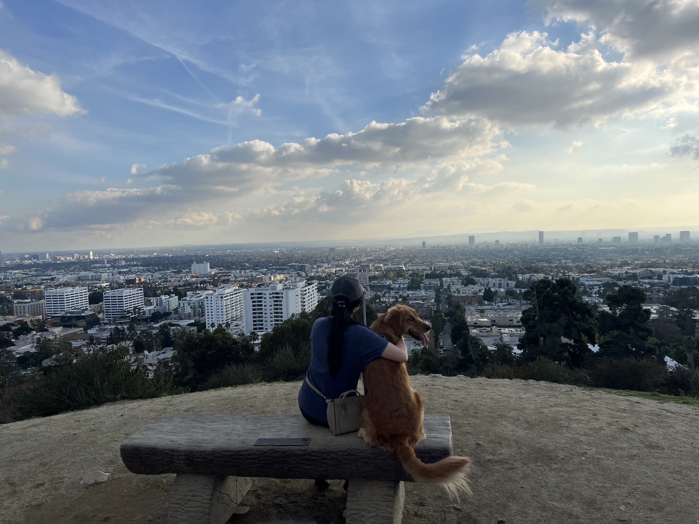
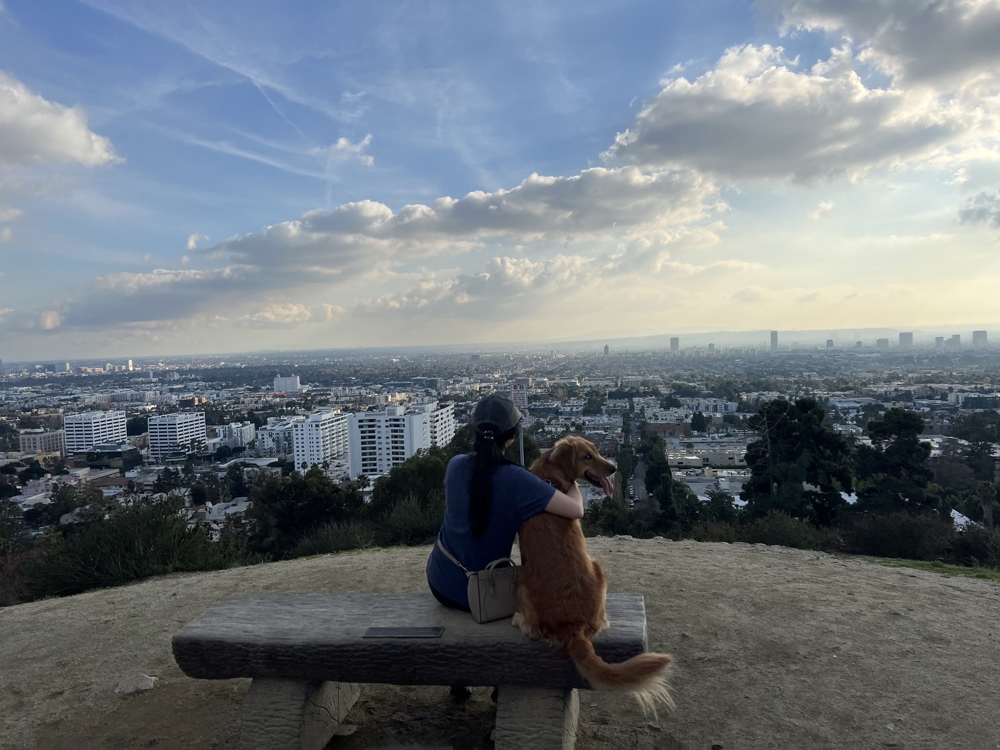

Our Story
It all started one summer in the living room of their mutual friend's home. After many laughs, late night heart-to-hearts in front of the fireplace, shared love for good food and adventure, and discovering their endless source of silliness, they fell in love.
On the evening of their first date at Granville Island, Jason asked Kelsey, "Will you be my girlfriend?" and she said "Yes."
Four years later, on the evening of their anniversary, they went back to Granville Island. Jason asked Kelsey, "Will you marry me?" and she said "Yes."
--
We love adventures (you may have heard some of our many stories) and this is our biggest adventure yet. Come join us on this next one! We can't wait to celebrate with you in Hawaii!
#theWeidding
The Weidding Party
Weidding Day
Schedule
4:00
5:00
6:00
7:00
8:00
9:00
10:00
Guests Arrive
Ceremony Begins
Cocktail Hour
Dinner
Games
Dancing
Night Ends
Dinner
Pupu
Entree
Dessert
Hawaiin Appetizers
Beef, Pork, or Fish
Dessert Table
Transportation
Parking
There will be plenty of free parking on-site.
Taxis
We will also provide complimentary taxis for you to get home after the wedding.